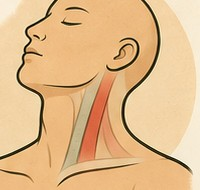
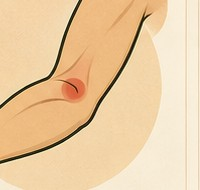
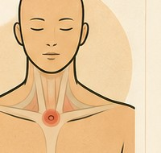
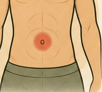
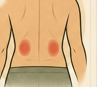
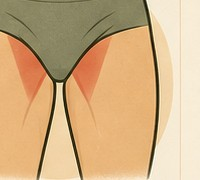
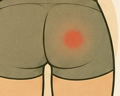
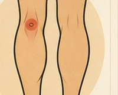

Bodywork
Soft-Tissue Recovery
A region-by-region guide to working on your own tension between sessions — by hand, foam roller, lacrosse ball, stretching, or band. Start with the areas to approach carefully below — they're worth knowing before anything else, since they cover the whole body rather than one region at a time.
Areas to Approach With Care
Areas to Approach With Care

These are spots where a nerve, artery, or vein sits close to the surface with little muscle to cushion it — what massage therapists call endangerment sites. They're not off-limits, but they call for light pressure only, never sustained deep pressure. The regions below reference the ones relevant to each area.
-

Front and sides of the neckCarotid artery and jugular vein sit right under the skin. Never press firmly here. -

Inner elbow creaseBrachial artery and median nerve. Light pressure only. -

Base of the throat / collarbone notchSits over the trachea and major vessels beneath. -

Navel areaThe abdominal aorta runs beneath. Keep abdominal work light. -

Low back over the kidneysNo firm or percussive pressure here. -

Inner thigh / groin creaseFemoral artery, vein, and nerve (the femoral triangle). -

Center of the glute, deepThe sciatic nerve passes through here (the sciatic notch). -

Back of the kneePopliteal artery and nerve. Avoid deep pressure.
By Region
Hands, Wrist & Forearm

How
Work along the forearm from wrist toward elbow, pressing with your thumb or fingers and pausing on any tender spot for 10–30 seconds, or use small kneading circles. For the hand, work between the finger joints and across the palm.
Direction
Stroke toward the elbow, not away from it — this follows the natural direction of venous and lymphatic drainage back toward the heart.
Press the forearm flat onto a table or against a wall, ball trapped underneath, and roll slowly from wrist to elbow. Pause on tender or gritty-feeling spots for 20–30 seconds rather than rolling straight through them.
Extend the arm, palm up, and gently pull the fingers back with the other hand to stretch the inside of the forearm (flexors); flip palm down and pull fingers toward you to stretch the top of the forearm (extensors). Hold each 20–30 seconds.
Loop a light band around the fingers and slowly open the hand against the resistance for wrist extensor endurance, or anchor the band and do slow wrist curls in both directions — useful for grip-heavy activities like poles or climbing.
Shoulder

How
Reach across with the opposite hand and knead the meaty muscle between your neck and shoulder (upper trapezius). Work the front of the shoulder joint and whatever you can comfortably reach around the shoulder blade.
Direction
Small kneading circles work better here than long strokes — this muscle responds well to sustained, gentle pressure on tender spots.
Stand with the ball between your upper back (or the meaty part of the shoulder blade) and a wall. Lean in and shift your weight slowly to find tender spots, then hold for 20–30 seconds rather than rolling briskly.
Lie with the roller across your upper back, arms crossed over your chest, and gently extend backward over it to open the front of the shoulders and thoracic spine — helps counter the rounded-forward posture that leaves shoulders feeling tight.
Cross one arm over your chest and use the other forearm to gently draw it closer for 20–30 seconds (cross-body stretch). For the front of the shoulder, stand in a doorway with your forearm on the frame and step through gently.
Anchor a light band and do slow external rotations (elbow at your side, forearm rotating outward) to work the rotator cuff, or band pull-aparts (arms straight, pulling the band apart at chest height) for the upper back.
Neck & Upper Back

How
Work the back and sides of the neck and the base of the skull with your fingertips.
Direction
Small circles or sustained holds on tender spots, moving slowly.
Lean into a ball against a wall for the muscles alongside your upper spine, or at the base of the skull — small movements, holding on tender spots rather than rolling briskly.
Lie with the roller under your upper back (not the neck itself) and gently extend backward over it to work thoracic mobility — tightness here often shows up as neck tension, even though the roller never touches the neck.
Tilt your ear toward one shoulder and hold 20–30 seconds, then repeat on the other side. Add a gentle chin tuck (drawing the chin straight back, not down) to stretch the base of the skull.
Collarbone & Chest

How
Massage the chest muscles (pectorals) working from the breastbone outward toward the shoulder — useful for the tightness that comes with rounded-shoulder posture.
Direction
Outward, from center to shoulder, with flat fingers or knuckles.
Standing, place the ball between the front of your shoulder/upper chest and a wall or door frame. Lean in gently and hold on tender spots — this area is more sensitive than the back, so use noticeably lighter pressure than you would on the shoulder blade.
Stand in a doorway, forearm on the frame at about shoulder height, and step through gently until you feel a stretch across the chest. Hold 20–30 seconds, then try the arm slightly higher and lower for different fibers.
Band pull-aparts and face pulls (pulling the band toward your face, elbows high) both work the upper back muscles that oppose a tight chest — helpful alongside stretching rather than instead of it.
Abdomen

How
Gentle circular strokes with a flat hand, generally moving clockwise — this follows the natural path of the large intestine and is commonly used for digestive comfort. Keep pressure light throughout.
Direction
Clockwise, light pressure, slow pace.
Lying face-down, prop up on your forearms or straight arms (a gentle cobra position) to open the front of the abdomen. Standing side bends — reaching one arm overhead and leaning away — stretch the sides.
Upper Legs

How
Knead the front of the thigh (quadriceps) and back of the thigh (hamstrings) with your palm or a loose fist, working in sections rather than trying to cover the whole thigh at once.
Direction
Generally upward, toward the hip.
Roll slowly along the front of the thigh (quads), the back of the thigh (hamstrings), and the outside of the thigh (IT band) — a few inches at a time rather than the whole length in one long stroke. Pause on tender spots for 20–30 seconds instead of rolling straight through.
Sit on the ball (on a chair or the floor) under one side of the glute and shift your weight to find a tender spot, then hold and breathe rather than grinding. Good for the deep glute muscles a foam roller can't reach as precisely.
Standing, pull one heel toward your glutes for a quad stretch. Seated or standing with one leg extended, hinge at the hips for a hamstring stretch. Step one leg back into a lunge, hips pressing forward, for a hip flexor stretch.
Loop a band around both thighs, just above the knees, and do side steps or clamshells (lying on your side, knees bent, top knee lifting against the band) to activate the glutes — a common addition to a warm-up before running or climbing.
Lower Legs, Ankles & Feet

How
Knead the calf from ankle toward knee. For the feet, roll the sole over a ball or bottle, and use your thumbs to work the arch. Gentle circles at the ankle joint help with mobility.
Direction
Calf: ankle toward knee. Foot: whatever feels good — this area responds well to broad, exploratory pressure.
Sit with the calf resting on the roller and lift your hips to control the pressure, rolling from ankle to just below the knee. Crossing the other leg on top adds more weight if you want deeper pressure.
Stand on the ball and roll the sole of your foot from heel to toes, pausing on tender spots — especially useful for the arch after a long day on your feet. A frozen water bottle works the same way if you want some cold along with it.
Standing in a lunge with the back leg straight and heel down, lean forward until you feel a stretch in the calf. Bend the back knee slightly and repeat to reach the deeper calf muscle underneath. For the ankle, draw slow circles through its full range.
Loop a light band around the top of the foot and slowly pull the toes toward you against the resistance (dorsiflexion), or anchor the band to the side and push the foot outward against it (eversion) — both build the ankle stability distance runners lean on most.
This guide is for general wellness self-care and isn't a substitute for professional bodywork, physical therapy, or medical advice. If you're pregnant, recovering from an injury or surgery, or have a condition like a blood clot, osteoporosis, or a vascular issue, check with a doctor before self-massage, foam rolling, or banded work — and always stop if something feels sharp, numb, or wrong rather than just tender or a normal stretch sensation.